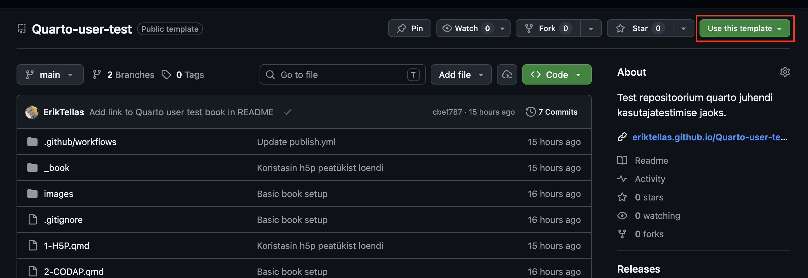
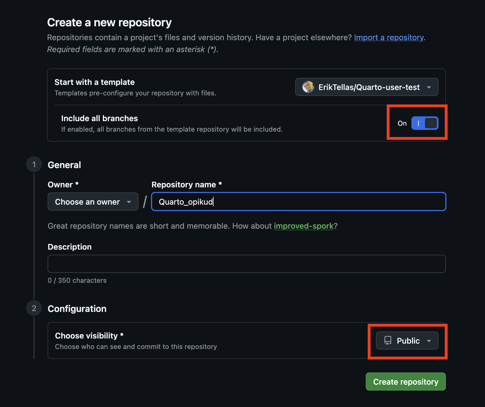
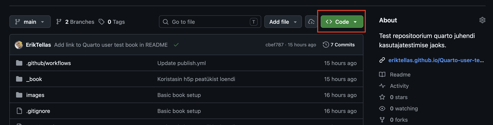
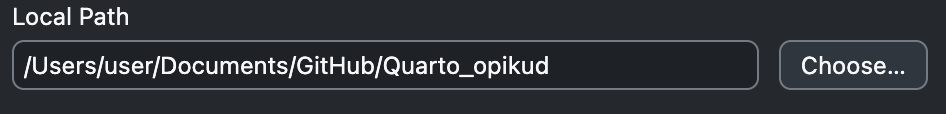
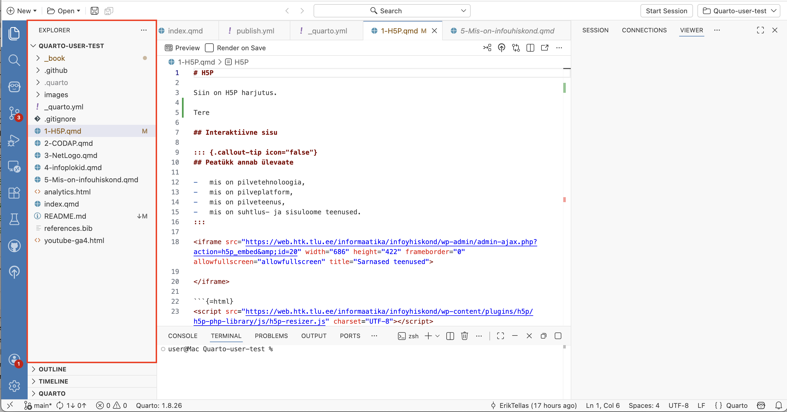
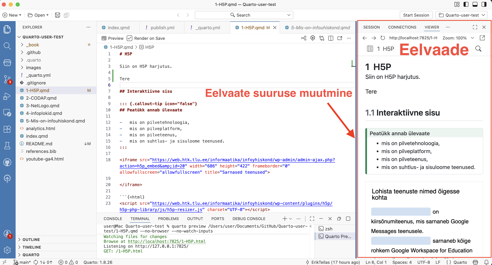

1 Kuidas alustada
Selles peatükis on juhised, kuidas paigaldada oma arvutisse vajalikud tööriistad Quarto raamatu loomiseks ja muutmiseks. Seejärel juhised, kuidas kloonida see raamatu repositoorium oma arvutisse ja avada see Positronis, et saaksid raamatut vaadata ja muuta.
1.1 Positron installimine
Positron on IDE (Integrated Development Environment - Arenduskeskkond), mis sisaldab vajalike tööriistu Quarto raamatute loomiseks ja sisu muutmiseks.
- Mine aadressile: https://positron.posit.co/install.html
- Lae alla installer oma operatsioonisüsteemile (Windows, macOS, Linux)
- Käivita installer ja järgi juhiseid
1.2 GitHub Desktop installimine
GitHub on veebipõhine platvorm koodi ja dokumentatsiooni majutamiseks ning versioonihalduseks. GitHub Desktop on tööriist, mis võimaldab sul hallata GitHubi repositooriume oma arvutis.
- Mine aadressile: https://desktop.github.com/
- Lae alla installer ja käivita see
- Logi sisse oma GitHub kontoga (kui sul pole kontot, loo see aadressil https://github.com)
1.3 Repositooriumi loomine malli kaudu
Järgmise sammuna loo omale repositoorium kasutades selleks malli, mis sisaldab lihtsat Quarto raamatut.
Mine brauseris aadressile: https://github.com/ErikTellas/Quarto-user-test
Klõpsa rohelist “Use this template” nuppu ja seejärel “Create a new repository”

Vali “Include all branches”.

Anna repositooriumile nimi
Quarto_opikudja määra repositoorium avalikuksSeejärel vajuta nuppu “Create Repository”
1.4 Repositooriumi kloonimine
Nüüd oled loonud omale malli järgi lihtsa Quarto raamatu repositooriumi. Järgmise sammuna klooni see oma arvutisse.
Ava brauseris oma repositoorium (või kui juba oled seal siis jätta see samm vahele): https://github.com/SINU_KASUTAJANIMI/Quarto_opikud
Klõpsa rohelist “Code” nuppu

Vali “Open with GitHub Desktop”
GitHub Desktop avaneb ja küsib, kuhu soovid projekti salvestada. Soovituslik on valida vaikimisi kaust
Documents/GitHub/Quarto_opikud
Klõpsa “Clone”
1.5 Projekti avamine Positronis
Ava rakendus Positron
NotePositron võib sind hoiatada, et git pole paigaldatud. Võid seda hetkel ignoreerida.Vali File → Open Folder
Navigeeri kausta
Quarto_opikud. Vaikimisi paigutasid sa selle oma dokumentide kastas asuvasseGithubkausta. (Documents/GitHub/Quarto_opikud)Klõpsa Open / Select Folder
Positron küsib, kas usaldad selle kausta failide autoreid, klõpsa
Yes, I trust the authors
Nüüd oled avanud raamatu projekti kausta Positroni rakenduses. Vasakul pool asub Explorer paneel. Siin näed sa erinevaid faile mis asuvad selles kaustas. Iga .qmd fail on eraldi peatükk. Näiteks 5-Mis-on-infoühiskond.qmd on selles näidisraamatus peatükk “Mis on info ühiskond?”.

1.6 Raamatu eelvaade
Eelvaade võimaldab sul näha milline näeb su raamatu välja veebis.
Ava mõni
.qmdfail (nt5-Mis-on-infoühiskond.qmd), avades vasakul poolexplorerpaneelis kaustaQuarto_opikudja klõpsates faili nimelÜleval vasakul on valik Render on Save, veendu, et see on valitud. See tähendab, et Quarto üritab tuvastada automaatselt, kui sa salvestad faili ja uuendab eelvaadet.
Klõpsa üleval nuppu Preview (või vajuta
Ctrl+Shift+K/Cmd+Shift+K)
Paari sekundi jooksul avaneb raamatu eelvaade Positroni sisseehitatud brauseris. Eelvaadet paneeli saad kursuriga tõmmata suuremaks ja väiksemaks. Kui asetad kursori eelvaate paneeli servale muutub serv siniseks.
